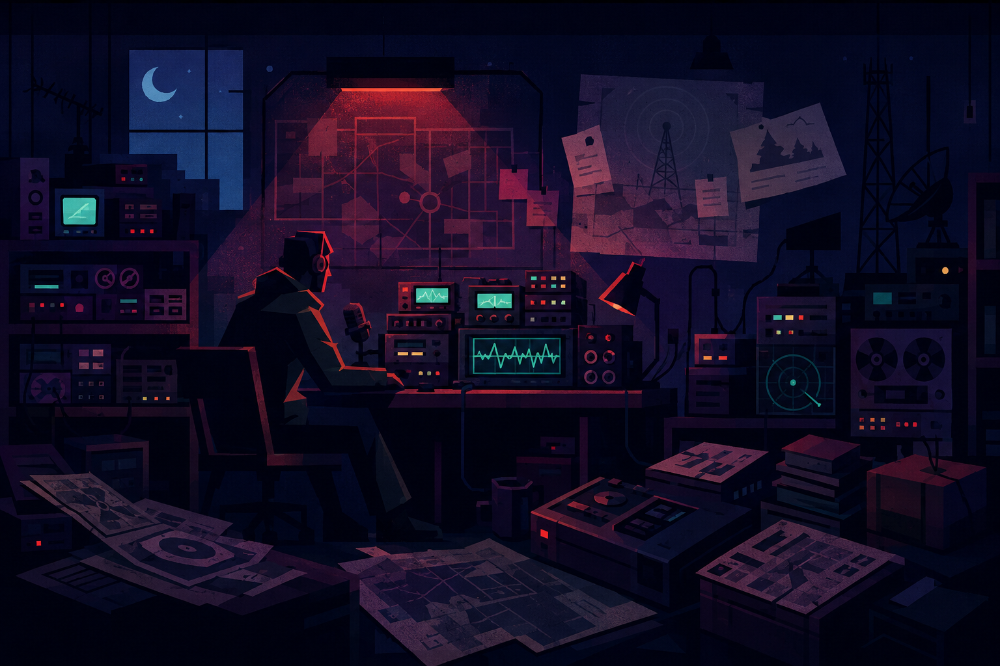

📻
REGISTRO DA TRANSMISSÃO
Uma mensagem isolada é apenas ruído. Quando duas fontes compartilham uma chave, a conexão revela uma história: quem transmitiu, de onde veio o sinal e onde procurar.

Uma transmissão fragmentada atravessou a noite. O operador registrou o código da mensagem, mas o nome do transmissor está em outro arquivo. Cruze as informações e descubra quem pediu ajuda.
MISSÃO 05 — CRUZAR A TRANSMISSÃO| ID | CÓDIGO | CANAL | STATUS |
|---|---|---|---|
| 01 | RX-041 | 07.2 | FRACO |
| 02 | RX-118 | 12.4 | LIMPO |
| 03 | RX-204 | 07.2 | CODIFICADO |
| 04 | RX-317 | 18.9 | LIMPO |
| 05 | RX-402 | 04.8 | FRACO |
| 06 | RX-512 | 18.9 | LIMPO |
| ID | NOME | ABRIGO | CÓDIGO |
|---|---|---|---|
| 11 | LIA | NORTE | RX-118 |
| 12 | CAIO | SUL | RX-402 |
| 13 | MAYA | NORTE | RX-204 |
| 14 | JOÃO | LESTE | RX-317 |
| 15 | RITA | OESTE | RX-512 |
| 16 | NOAH | NORTE | RX-041 |
| NOME | ABRIGO | CÓDIGO | CANAL | STATUS |
|---|---|---|---|---|
| Nenhuma identidade confirmada. | ||||
Uma mensagem isolada é apenas ruído. Quando duas fontes compartilham uma chave, a conexão revela uma história: quem transmitiu, de onde veio o sinal e onde procurar.
A transmissão RX-204 pertence a MAYA, do abrigo NORTE. A equipe agora sabe onde concentrar a busca.